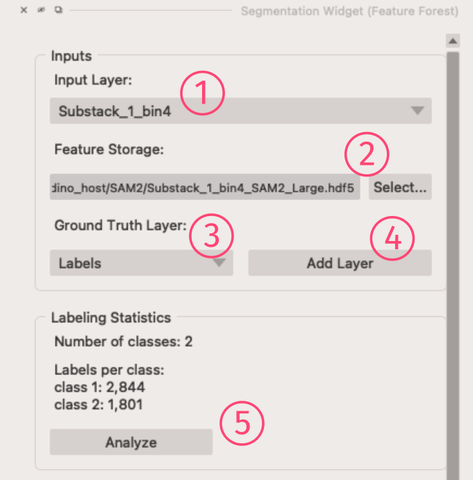
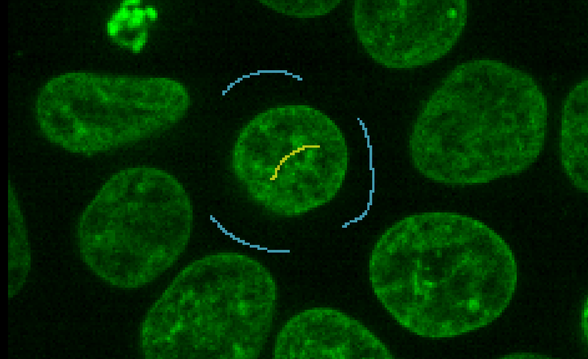
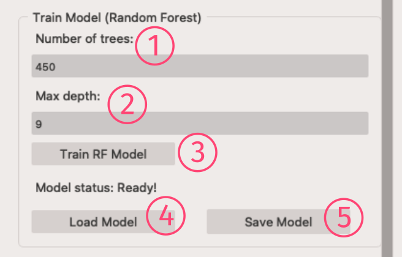
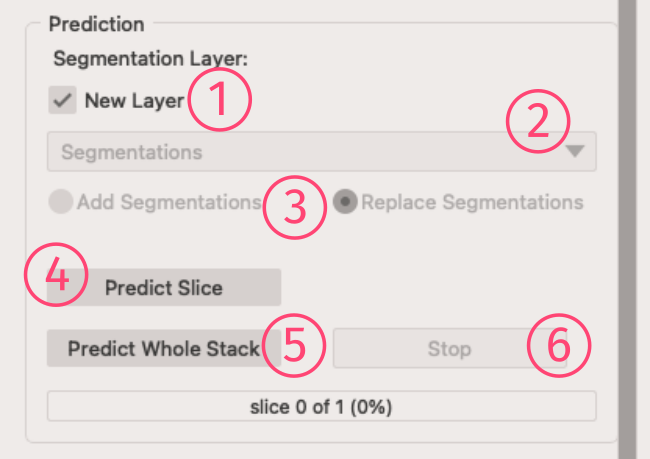
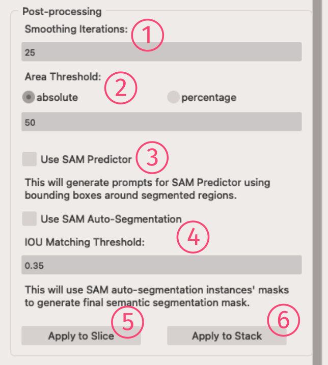
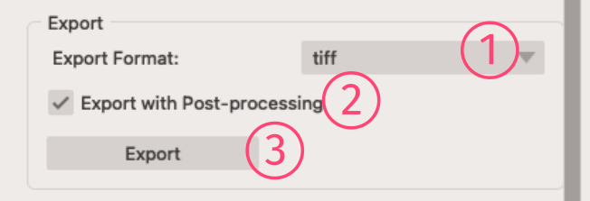
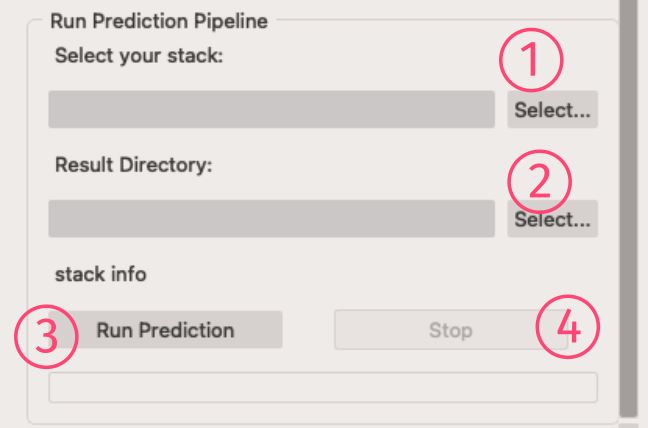

Segmentation Widget
Hurray! Now you have your features extracted and ready for the main action! 😊
The Segmentation widget is a long widget with several panels, but don't worry we'll go through all of them, from top to bottom!
Inputs and Labels' statistics

Inputs
- Input Layer: To set which napari layer is your input image layer
- Feature Storage: Select your previously extracted features
HDF5file here.
Note: You need to select the storage file for the selected input image, obviously! - Ground Truth Layer: To select your Labels layer
- Add Layer button: To add a new GT layer to napari layers
Note
For annotations, users are expected to label pixels in the Labels layer and provide annotations as scribbles for multiple classes.
This can be done by selecting the paint brush tool and choosing a specific label id for each class.
An example screenshot has been provided to show how to provide annotations for, eg. the background class and foreground (nuclei) class.

Labeling Statistics
- Analyze button: To get info about number of classes and labels you've added so far.
Note
- You can have as many Labels layer as you want. But only the selected one will be used for training the RF model.
- You can also drag & drop your previously saved labels into the napari and select that layer.
Training the RF Model

Train Model (Random Forest)
- Number of Trees: To set number of trees (estimators) in the forest
- Max depth: The maximum depth of a tree
- Train button: To extract the training data and train the RF model
- Load Model button: Using this, you can load a previously trained and saved model.
- Save Model button: To save the current RF model
Tip
- Setting a high value for the
Max depthwould overfit your RF model over the training data. So, it won't perform well on test images. But if you're doing the segmentation over the entire stack (or a single image), you may try higher values.
Prediction

Segmentation Layer
- New Layer: If checked, the segmentation result will show up on a new layer in napari
- Layer Dropdown: You can select which layer should be used as the layer for the segmentation result
- Add/Replace Segmentation option: Based on your choice, this will add new segmentation to the previous result, or completely replace the result (Default).
Buttons
- Predict Slice button: To generate the segmentation mask for the current slice
- Predict Whole Stack button: to start the prediction process for the whole loaded stack
- Stop button: Just for your safety!😉 this will stop the prediction process over the whole stack.
Post-processing

- Smoothing Iterations: Sets how many times the min-curvature smoothing algorithm should be run.
- Area Threshold: You can set a threshold to remove very small regions with area below this threshold. It can be an absolute pixel based area, or a relative percentage value (100% will be the largest region in the mask).
- Use SAM Predictor: To use SAM as the mask predictor. By checking this option, a bounding box around each RF generated mask will be feeded as a prompt to SAM, and SAM will predict the final mask.
- Use SAM Auto-Segmentation: By choosing this option, first, SAM auto-segmentation process predicts all possible mask components in the image, then those components with high IOU over the RF predicted components will be selected as the final mask.
- IOU Matching Threshold: The threshold to match SAM auto-segmentation masks with the RF predicted ones. SAM generated components with IOU below this threshold will be ignored.
- Apply to Slice button: This will run the post-processing and apply it to the mask.
- Apply to Stack button: To apply the post-processing to the whole loaded stack, please push this button!
Info
RF prediction is pixel based, so the mask will have holes, fuzzy edges and it's not smooth. To make the predicted mask smooth, we are using the min-curvature smoothing algorhitm which is a edge-preserving iterative algorithm. It means, this algorithm will not change the overall shape of the mask components while smoothing them, and you have the power to run it enough times to get your desired results.
Tip
Using SAM for the post-processing usually generate a decent mask. If your image has small number of almost well-separated objects, then we recommend using the SAM Auto-Segmentation option. Otherwise, use the SAM Predictor. It will be faster as well.
Export
 With this panel, you can export the predicted mask into provided formats.
- Export Format: To select the export file format. Currently TIFF, NRRD, NUMPY are supported.
- Export with Post-processing: If checked you'll export the post-processed mask.
- Export button: Open up a save dialog to get where to save the file.
Run Prediction Pipeline
 When you are happy with the trained RF model, you can use this panel to run the prediction over the whole large stack that you may have.
- Select your stack: Set your large stack here.
- Result Directory: To se where to save the prediction results
- Run Prediction button: To run the process and go for a drink!
- Stop button: In case of any regrets or forgetfulness, use this!
Info
Results will be saved image-by-image as TIFF files. Also, all the set post-processing will be applied and saved in separate folders.